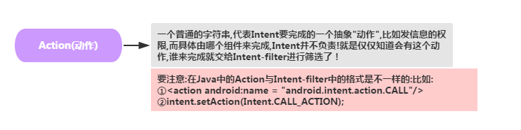
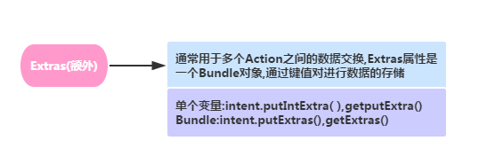
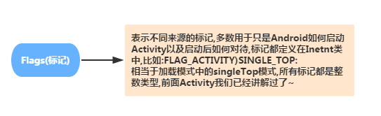
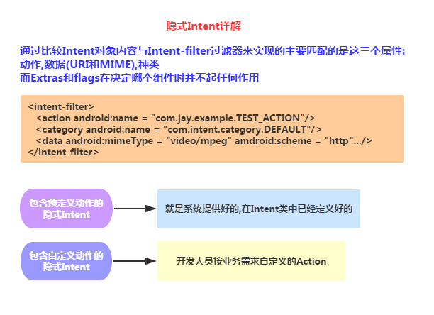
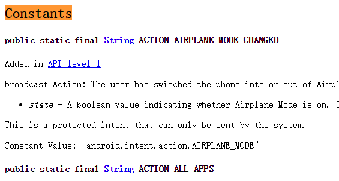

この節の導入：
前の節が終わったことで、Androidの4大コンポーネントはすべて学習し終えたことになります～。そしてこの節では、4大コンポーネント間のハブとなるIntent（インテント）、Android通信の架け橋について学びます。例えば、次のように使うことができます：
- startActivity(Intent)/startActivityForResult(Intent)：Activityを起動する
- startService(Intent)/bindService(Intent)：Serviceを起動する
- sendBroadcast：指定したBroadcastReceiverにブロードキャストを送信する
- また、4大コンポーネントを登録するときに、たくさん書いたことをIntent-Filter忘れないでくださいよ～
さて、余計な話はやめて、この節の内容を始めましょう！また、すでに前の方でIntentを使ったことがあるので、概念的な話はしません。 恒例により、公式API：Intent
1.明示的Intentと暗黙的Intentの違い
- 明示的Intent：コンポーネント名を指定して起動する対象コンポーネントを指定します。例：startActivity(new Intent(A.this,B.class)); 起動するコンポーネントは毎回1つだけです～
- 暗黙的Intent：コンポーネント名を指定せず、IntentのAction、Data、またはCategoryを指定します。コンポーネントを起動するとき、 AndroidManifest.xmlの関連コンポーネントのIntent-filterと照合し、属性を満たすコンポーネントを一つずつマッチングします。複数一致する場合は、 どれを起動するかを選択させるダイアログが表示されます～
2.Intentの7つの属性：
1）ComponentName（コンポーネント名）

2）Action（アクション）

3）Category（カテゴリ）

4）Data（データ）、Type（MIMEタイプ）

5）Extras（エクストラ）

6）Flags（フラグ）

3.明示的Intentの使用例：
これはよく使うので、早速例を見てみましょう：
例1：ボタンをクリックしてホーム画面に戻る：実行結果のスクリーンショット：

コアコード：
Intent it = new Intent(); it.setAction(Intent.ACTION_MAIN); it.addCategory(Intent.CATEGORY_HOME); startActivity(it);
例2：ボタンをクリックして百度のページを開く：実行結果のスクリーンショット：

コアコード：
Intent it = new Intent();
it.setAction(Intent.ACTION_VIEW);
it.setData(Uri.parse("http://www.baidu.com"));
startActivity(it);
4.暗黙的Intentの詳細

1）定義済みアクションの暗黙的Intentの例：
コード例：ボタンをクリックすると、ActionがVIEWであるすべてのActivityが抽出され、ユーザーがさらに選択します：
コアコード：
2番目のActivityのレイアウトと、対応するActivityを作成し、1番目のActivityのボタンのクリックイベントに以下のコードを追加します：
Intent it = new Intent(); it.setAction(Intent.ACTION_VIEW); startActivity(it);
最後に2番目のActivityのIntentに以下のコードを追加します：
<activity android:name=".SecondActivity"
android:label="第二个Activity">
<intent-filter>
<action android:name="android.intent.action.VIEW"/>
<category android:name="android.intent.category.DEFAULT"/>
</intent-filter>
</activity>
実行結果のスクリーンショット：

2）カスタムアクションの暗黙的Intentの例：
コード例：カスタムのActionとcategoryを使用して別のActivityを起動します
コアコード：2番目のActivityのレイアウトと、対応するActivityを作成し、1番目のActivityのボタンのクリックイベントに以下のコードを追加します：
Intent it = new Intent();
it.setAction("my_action");
it.addCategory("my_category");
startActivity(it);
最後に2番目のActivityのIntentに以下のコードを追加します：
<activity android:name=".SecondActivity"
android:label="第二个Activity">
<intent-filter>
<action android:name="my_action"/>
<category android:name="my_category"/>
<category android:name="android.intent.category.DEFAULT"/>
</intent-filter>
</activity>
注意：独自のcategoryを定義しましたが、デフォルトのcategoryも追加する必要があります。追加しないとエラーになります：
<category android:name="android.intent.category.DEFAULT"/>
5.よく使うシステムIntentのまとめ
よく使うシステムIntentの一覧を貼っておきます。上にないものがあれば、ぜひ教えてください～
//===============================================================
//1.拨打电话
// 给移动客服10086拨打电话
Uri uri = Uri.parse("tel:10086");
Intent intent = new Intent(Intent.ACTION_DIAL, uri);
startActivity(intent);
//===============================================================
//2.发送短信
// 给10086发送内容为“Hello”的短信
Uri uri = Uri.parse("smsto:10086");
Intent intent = new Intent(Intent.ACTION_SENDTO, uri);
intent.putExtra("sms_body", "Hello");
startActivity(intent);
//3.发送彩信（相当于发送带附件的短信）
Intent intent = new Intent(Intent.ACTION_SEND);
intent.putExtra("sms_body", "Hello");
Uri uri = Uri.parse("content://media/external/images/media/23");
intent.putExtra(Intent.EXTRA_STREAM, uri);
intent.setType("image/png");
startActivity(intent);
//===============================================================
//4.打开浏览器:
// 打开百度主页
Uri uri = Uri.parse("http://www.baidu.com");
Intent intent = new Intent(Intent.ACTION_VIEW, uri);
startActivity(intent);
//===============================================================
//5.发送电子邮件:(阉割了Google服务的没戏!!!!)
// 给someone@domain.com发邮件
Uri uri = Uri.parse("mailto:someone@domain.com");
Intent intent = new Intent(Intent.ACTION_SENDTO, uri);
startActivity(intent);
// 给someone@domain.com发邮件发送内容为“Hello”的邮件
Intent intent = new Intent(Intent.ACTION_SEND);
intent.putExtra(Intent.EXTRA_EMAIL, "someone@domain.com");
intent.putExtra(Intent.EXTRA_SUBJECT, "Subject");
intent.putExtra(Intent.EXTRA_TEXT, "Hello");
intent.setType("text/plain");
startActivity(intent);
// 给多人发邮件
Intent intent=new Intent(Intent.ACTION_SEND);
String[] tos = {"1@abc.com", "2@abc.com"}; // 收件人
String[] ccs = {"3@abc.com", "4@abc.com"}; // 抄送
String[] bccs = {"5@abc.com", "6@abc.com"}; // 密送
intent.putExtra(Intent.EXTRA_EMAIL, tos);
intent.putExtra(Intent.EXTRA_CC, ccs);
intent.putExtra(Intent.EXTRA_BCC, bccs);
intent.putExtra(Intent.EXTRA_SUBJECT, "Subject");
intent.putExtra(Intent.EXTRA_TEXT, "Hello");
intent.setType("message/rfc822");
startActivity(intent);
//===============================================================
//6.显示地图:
// 打开Google地图中国北京位置（北纬39.9，东经116.3）
Uri uri = Uri.parse("geo:39.9,116.3");
Intent intent = new Intent(Intent.ACTION_VIEW, uri);
startActivity(intent);
//===============================================================
//7.路径规划
// 路径规划：从北京某地（北纬39.9，东经116.3）到上海某地（北纬31.2，东经121.4）
Uri uri = Uri.parse("http://maps.google.com/maps?f=d&saddr=39.9 116.3&daddr=31.2 121.4");
Intent intent = new Intent(Intent.ACTION_VIEW, uri);
startActivity(intent);
//===============================================================
//8.多媒体播放:
Intent intent = new Intent(Intent.ACTION_VIEW);
Uri uri = Uri.parse("file:///sdcard/foo.mp3");
intent.setDataAndType(uri, "audio/mp3");
startActivity(intent);
//获取SD卡下所有音频文件,然后播放第一首=-=
Uri uri = Uri.withAppendedPath(MediaStore.Audio.Media.INTERNAL_CONTENT_URI, "1");
Intent intent = new Intent(Intent.ACTION_VIEW, uri);
startActivity(intent);
//===============================================================
//9.打开摄像头拍照:
// 打开拍照程序
Intent intent = new Intent(MediaStore.ACTION_IMAGE_CAPTURE);
startActivityForResult(intent, 0);
// 取出照片数据
Bundle extras = intent.getExtras();
Bitmap bitmap = (Bitmap) extras.get("data");
//另一种:
//调用系统相机应用程序，并存储拍下来的照片
Intent intent = new Intent(MediaStore.ACTION_IMAGE_CAPTURE);
time = Calendar.getInstance().getTimeInMillis();
intent.putExtra(MediaStore.EXTRA_OUTPUT, Uri.fromFile(new File(Environment
.getExternalStorageDirectory().getAbsolutePath()+"/tucue", time + ".jpg")));
startActivityForResult(intent, ACTIVITY_GET_CAMERA_IMAGE);
//===============================================================
//10.获取并剪切图片
// 获取并剪切图片
Intent intent = new Intent(Intent.ACTION_GET_CONTENT);
intent.setType("image/*");
intent.putExtra("crop", "true"); // 开启剪切
intent.putExtra("aspectX", 1); // 剪切的宽高比为1：2
intent.putExtra("aspectY", 2);
intent.putExtra("outputX", 20); // 保存图片的宽和高
intent.putExtra("outputY", 40);
intent.putExtra("output", Uri.fromFile(new File("/mnt/sdcard/temp"))); // 保存路径
intent.putExtra("outputFormat", "JPEG");// 返回格式
startActivityForResult(intent, 0);
// 剪切特定图片
Intent intent = new Intent("com.android.camera.action.CROP");
intent.setClassName("com.android.camera", "com.android.camera.CropImage");
intent.setData(Uri.fromFile(new File("/mnt/sdcard/temp")));
intent.putExtra("outputX", 1); // 剪切的宽高比为1：2
intent.putExtra("outputY", 2);
intent.putExtra("aspectX", 20); // 保存图片的宽和高
intent.putExtra("aspectY", 40);
intent.putExtra("scale", true);
intent.putExtra("noFaceDetection", true);
intent.putExtra("output", Uri.parse("file:///mnt/sdcard/temp"));
startActivityForResult(intent, 0);
//===============================================================
//11.打开Google Market
// 打开Google Market直接进入该程序的详细页面
Uri uri = Uri.parse("market://details?id=" + "com.demo.app");
Intent intent = new Intent(Intent.ACTION_VIEW, uri);
startActivity(intent);
//===============================================================
//12.进入手机设置界面:
// 进入无线网络设置界面（其它可以举一反三）
Intent intent = new Intent(android.provider.Settings.ACTION_WIRELESS_SETTINGS);
startActivityForResult(intent, 0);
//===============================================================
//13.安装apk:
Uri installUri = Uri.fromParts("package", "xxx", null);
returnIt = new Intent(Intent.ACTION_PACKAGE_ADDED, installUri);
//===============================================================
//14.卸载apk:
Uri uri = Uri.fromParts("package", strPackageName, null);
Intent it = new Intent(Intent.ACTION_DELETE, uri);
startActivity(it);
//===============================================================
//15.发送附件:
Intent it = new Intent(Intent.ACTION_SEND);
it.putExtra(Intent.EXTRA_SUBJECT, "The email subject text");
it.putExtra(Intent.EXTRA_STREAM, "file:///sdcard/eoe.mp3");
sendIntent.setType("audio/mp3");
startActivity(Intent.createChooser(it, "Choose Email Client"));
//===============================================================
//16.进入联系人页面:
Intent intent = new Intent();
intent.setAction(Intent.ACTION_VIEW);
intent.setData(People.CONTENT_URI);
startActivity(intent);
//===============================================================
//17.查看指定联系人:
Uri personUri = ContentUris.withAppendedId(People.CONTENT_URI, info.id);//info.id联系人ID
Intent intent = new Intent();
intent.setAction(Intent.ACTION_VIEW);
intent.setData(personUri);
startActivity(intent);
//===============================================================
//18.调用系统编辑添加联系人（高版本SDK有效）：
Intent it = newIntent(Intent.ACTION_INSERT_OR_EDIT);
it.setType("vnd.android.cursor.item/contact");
//it.setType(Contacts.CONTENT_ITEM_TYPE);
it.putExtra("name","myName");
it.putExtra(android.provider.Contacts.Intents.Insert.COMPANY, "organization");
it.putExtra(android.provider.Contacts.Intents.Insert.EMAIL,"email");
it.putExtra(android.provider.Contacts.Intents.Insert.PHONE,"homePhone");
it.putExtra(android.provider.Contacts.Intents.Insert.SECONDARY_PHONE,"mobilePhone");
it.putExtra( android.provider.Contacts.Intents.Insert.TERTIARY_PHONE,"workPhone");
it.putExtra(android.provider.Contacts.Intents.Insert.JOB_TITLE,"title");
startActivity(it);
//===============================================================
//19.调用系统编辑添加联系人（全有效）：
Intent intent = newIntent(Intent.ACTION_INSERT_OR_EDIT);
intent.setType(People.CONTENT_ITEM_TYPE);
intent.putExtra(Contacts.Intents.Insert.NAME, "My Name");
intent.putExtra(Contacts.Intents.Insert.PHONE, "+1234567890");
intent.putExtra(Contacts.Intents.Insert.PHONE_TYPE,Contacts.PhonesColumns.TYPE_MOBILE);
intent.putExtra(Contacts.Intents.Insert.EMAIL, "com@com.com");
intent.putExtra(Contacts.Intents.Insert.EMAIL_TYPE, Contacts.ContactMethodsColumns.TYPE_WORK);
startActivity(intent);
//===============================================================
//20.打开另一程序
Intent i = new Intent();
ComponentName cn = new ComponentName("com.example.jay.test",
"com.example.jay.test.MainActivity");
i.setComponent(cn);
i.setAction("android.intent.action.MAIN");
startActivityForResult(i, RESULT_OK);
//===============================================================
//21.打开录音机
Intent mi = new Intent(Media.RECORD_SOUND_ACTION);
startActivity(mi);
//===============================================================
//22.从google搜索内容
Intent intent = new Intent();
intent.setAction(Intent.ACTION_WEB_SEARCH);
intent.putExtra(SearchManager.QUERY,"searchString")
startActivity(intent);
//===============================================================
6.Actionはどこで調べる？
以前収集したIntent Actionをそのまま貼ろうと思いましたが、よく考えたらやめました。魚を与えるよりも、魚の釣り方を教えるほうがいいですからね。 もしAndroidのドキュメントをダウンロードしているなら、以下のパスにあります：
sdk-->docs-->reference-->android--->content--->Intent.html
このファイルを見つけて、そのConstantsのところから始めればいいのです：

見慣れないものに遭遇したら、ここで調べればOKです～
この節のまとめ：
さて、Intentの基本的な使用法は以上です。次の節では、日常開発でIntentを使用する際に遭遇するかもしれない問題やニーズについて引き続き学んでいきます。お楽しみに、ありがとうございます～
クリックしてノートを共有
<p style="font-size:14px;">メモは本記事の内容を拡張したものである必要があります！</p><br> <p style="font-size:12px;"><a href="../tougao.html" target="_blank">記事投稿は、こちらをクリック</a></p> <p style="font-size:14px;"><a href="./runoob-user-test-intro.html" target="_blank">招待コードの取得方法</a></p> <h3 class="text-muted"><i class="fa fa-info-circle" aria-hidden="true"></i> ノートを共有する前に<a href=".." class="runoob-pop">ログイン</a>が必要です！</h3> <p><a href="./runoob-user-test-intro.html" target="_blank">招待コードの取得方法</a></p>